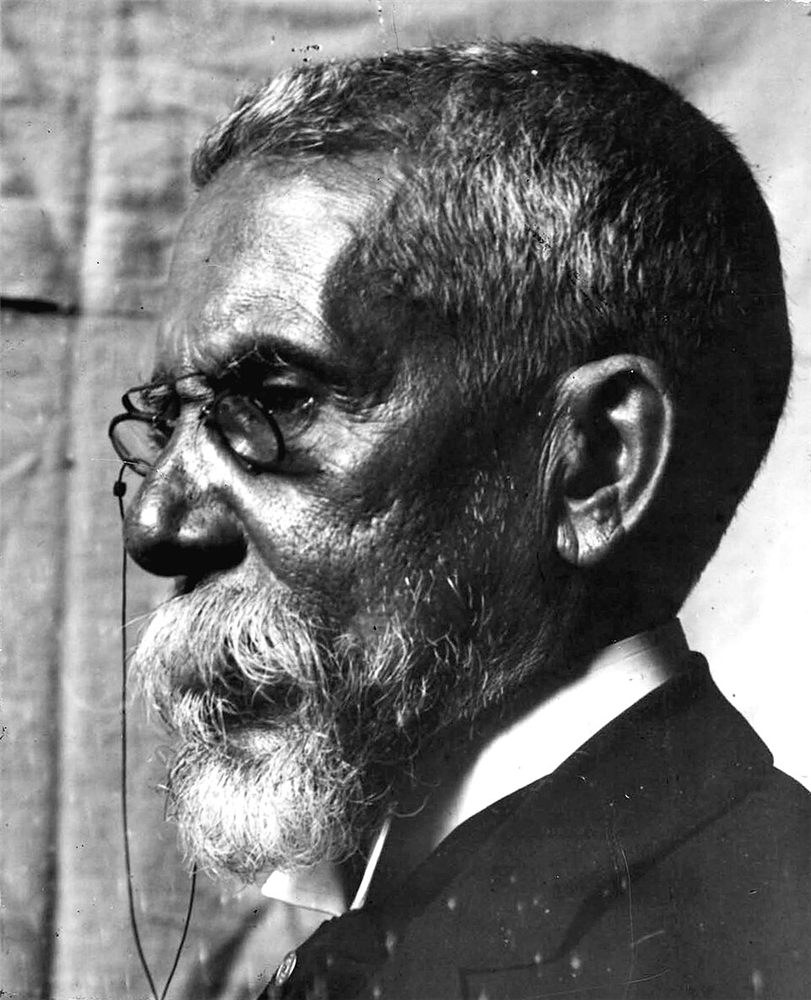

Língua Portuguesa
Fanzine, apresentações com slides e atividades integradas.
Ver disciplina →Áreas do Saber / Linguagens
Ler, escrever, apresentar e criar: as formas de comunicação e expressão.
Fanzine, apresentações com slides e atividades integradas.
Ver disciplina →
Realismo e Naturalismo, "O avesso da pele" e diário de leitura.
Ver disciplina →
Inglês para entrevistas de emprego: "Tell me about yourself".
Ver disciplina →
Movimentos artísticos, baralho artístico e Mostra de Artes.
Ver disciplina →